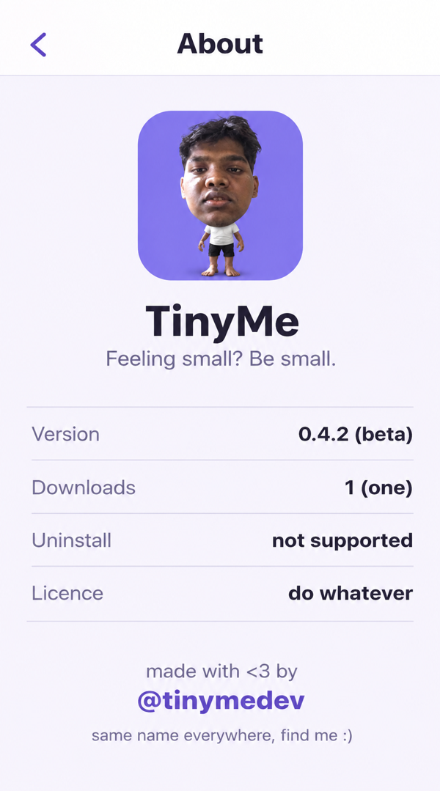

TPF-0042 is to be kept on a single company phone (the cracked one), powered off, inside a locked drawer in the pantry. Bluetooth is to remain disabled. Personnel may not join video calls within 3 metres of the drawer.
Under no circumstances is TPF-0042 to be shown to investors (see Incident 0042-B).
Uninstalling TPF-0042 is not to be attempted. See Addendum 0042-C.
TPF-0042 is a face filter for video calls. When active, it shows the subject's head at normal size on top of a small but fully formed body, approximately cm tall. The body copies the subject's movements with a delay of seconds. Subjects report no discomfort, and in % of cases do not notice the filter is on.
The filter cannot be switched off from the phone's settings. Colleagues who point it out are typically met with the response "what filter?"
On /2026, an employee of the department joined the Series A investor call with TPF-0042 active and remained on camera for 47 minutes. He then asked a question about the Q3 numbers. The investors have asked for the filter's name. Facilities has not replied.
Interviewer: Dr.
Subject: Employee involved in Incident 0042-B
Dr. : Were you aware the filter was on during the call?
Subject: What filter?
Dr. : [shows Exhibit A]
Subject: Oh. That explains why everyone kept looking at my feet.
<End Log>
Attempt 1: filter uninstalled from the affected phone. It reappeared within the hour on the nearest phone below 20% battery.
Attempt 2: phone factory-reset. Filter reappeared on the CTO's phone. The CTO has described this as "honestly kind of an honour".
Attempt 3: phone thrown into the Singapore River by . Filter reappeared on the phone of the person who threw it.
No further attempts are authorised.

Exhibit B: the About screen of the app TPF-0042 came from, recovered from the affected phone.TPF-0042 has been traced to a free app called TinyMe, made by a single developer. The developer briefly worked at Tissue Packet as an intern before leaving the company on terms. Their name has been redacted from this file for privacy reasons.
Facilities believes the developer may know how to shut TPF-0042 down. Facilities has decided not to look into it, because looking into it sounds like a lot of work.